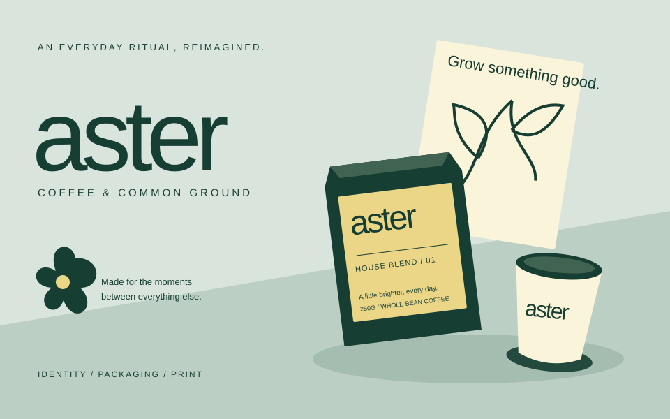

Issue #87 · superseded P1 comparison
Public discovery and account actions need separate homes.
These static header studies use the current ODR tokens, the bundled Pretendard font, and the repository's local Aster artwork as a content sample.
Superseded static comparison. A is now the chosen structure. The active review is the quieter native A refinement described in issue-87-proposal.md; this page remains only as historical context for the earlier A/B discussion.
A — public-first header with Account disclosure
Recommended
Four public actions stay visible. Personal destinations share one labelled account affordance, with the menu shown open here so its contents can be reviewed.
Desktop

Public Feed
Feed is the public stream of published Revisions and Releases. The active location is visible in the public group.
Active public location: Feed. Account items remain grouped and available from one named control.
440px mobile
Feed
All primary actions fit within the viewport. The open Account panel uses the available width.
No horizontal overflow. The open state makes the keyboard and discovery contract explicit.
B — two visible navigation rows
Both groups stay in view, with no disclosure interaction. The cost is a taller sticky header, especially for signed-in users on small screens.
Desktop
Public Feed
Every public and personal destination is immediately visible in a named row.
Highest immediate discoverability, with a larger header footprint.
440px mobile
Feed
All actions remain visible and tabbable, while the header grows vertically instead of scrolling sideways.
No hidden account actions, but the sticky header occupies more of the viewport.